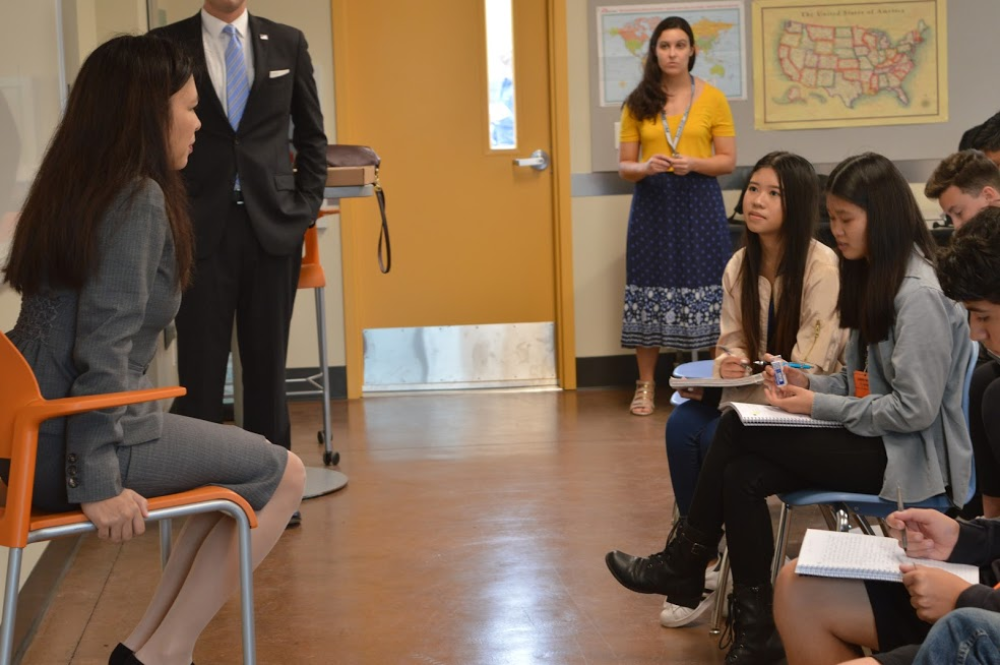
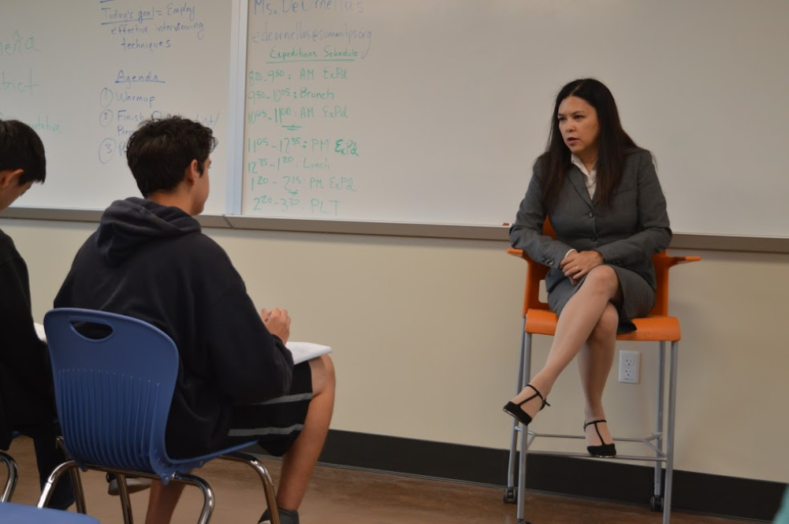

Recent Articles
 About Jackie Speier
About Jackie Speier
Posted on August 31, 2018 by Massimo SibilloTags: Daly CityJackie Speier, who is the incumbent for the 14th district of California, has a new challenger running for representative, Cristina Osmena. |
 Cristina Osmeña Challenges What It Means To Be A Republican
Cristina Osmeña Challenges What It Means To Be A Republican
Posted on August 30, 2018 by Evelyn Archibald, Kalysta Frost, and Mytrisha SarmientoTags: Daly City, NewsCristina Osmeña, Congressional candidate for the 14th district in California, is a strong Republican - but she’s not your typical GOP candidate. |
Cristina Osmeña Fights for Fiscal Conservativity
Posted on August 30, 2018 by Matthew Goncalves, Ethaniel Reyes, Massimo Sibillo and Jordan SinghTags: Daly City, NewsCristina Osmeña, who is running to represent the 14th Congressional District of California against Democratic opponent Jackie Speier, wants to focus on making changes for the Bay Area by lowering taxes, being an active participant in the legislature and trying to implement bills in her first 100 days in office. |

Cristina Osmeña’s Conflicting Feelings on Immigration
Posted on August 30, 2018 by Lyanna Cruzat, Melissa Domingo, and Mariam FeleyehTags: Daly City, News14th district California Congressional candidate Cristiña Osmena has conflicted feelings on immigration in the United States. |
||||
|

Cristina Osmeña Fights for Fiscal Conservativity
Posted on August 29, 2018 by Albert Chang-Yoo and Zachary NavarraTags: Daly City, NewsCongressional Candidate Cristina Osmeña wants voters in the 14th district to know that her defining mark is her belief in fiscal conservativity. |
 Cristina Osmeña Wants to Uphold the Values of the 14th District
Cristina Osmeña Wants to Uphold the Values of the 14th District
Posted on August 29, 2018 by Jenny Hu and Sophia LimTags: Daly City, NewsCongressional candidate Cristina Osmeña wants to be an advocate for the values of District 14 and District 14 only. |
 Congressional candidate Cristina Osmeña pushes for fiscal conservatism and strict immigration control
Congressional candidate Cristina Osmeña pushes for fiscal conservatism and strict immigration control
Posted on Aug 29, 2018 by Sophia Woehl and Amanda YonTags: Daly City, NewsMs. Osmeña came to Summit Shasta on Aug. 23 for a mock press conference with students from the journalism class. |
 Fitness Course Helps Students Stay in Shape
Fitness Course Helps Students Stay in Shape
Posted on May 28, 2018 by Sara Barrios-Perez, Jennifer Gomez and Malia VaeaTags: Redwood City, News, Expeditions, SportsAt Summit Preparatory Charter High School, the Expeditions team offers a class that goes to the Riekes Center to work out. |
||||